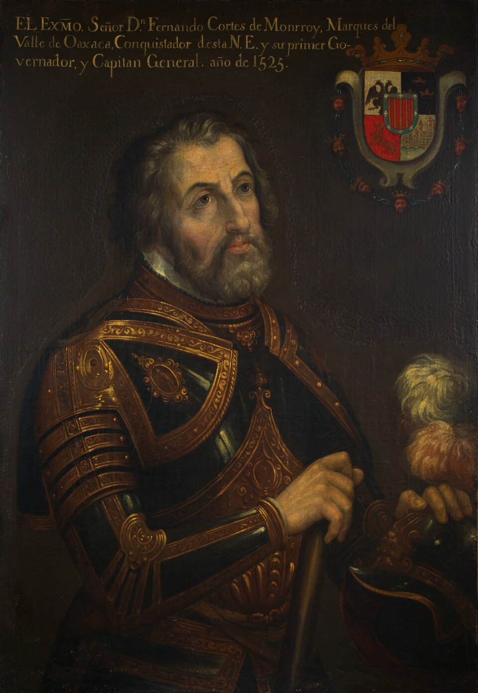
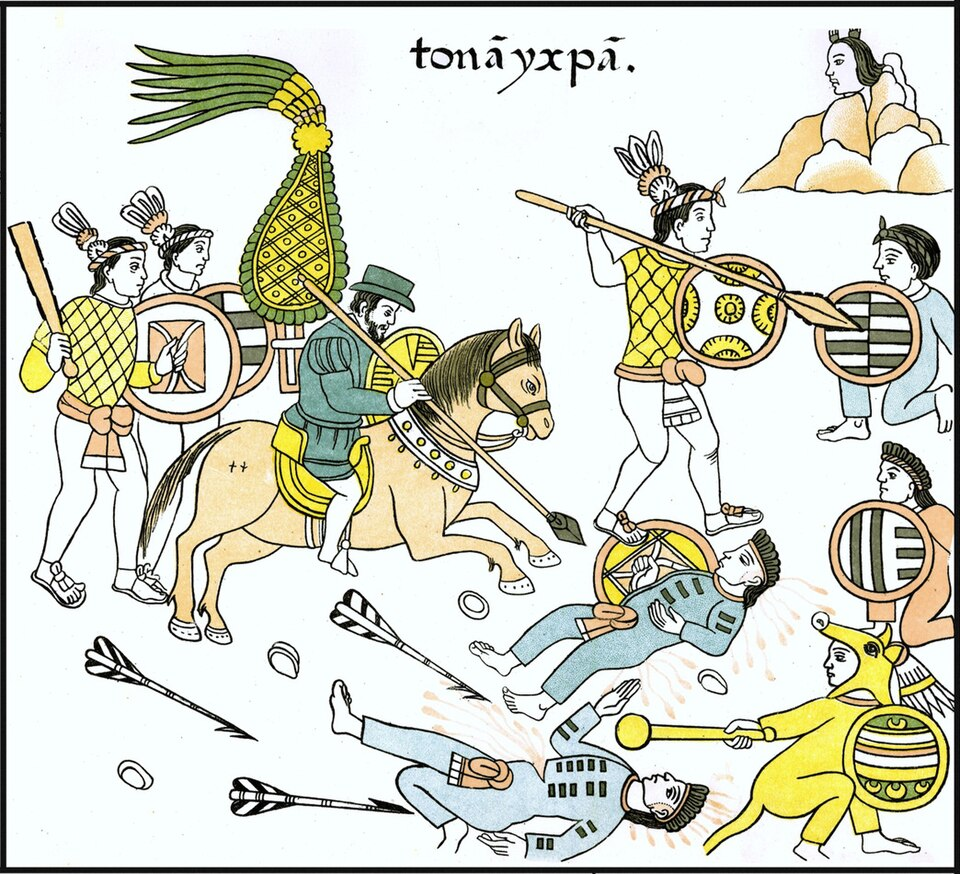
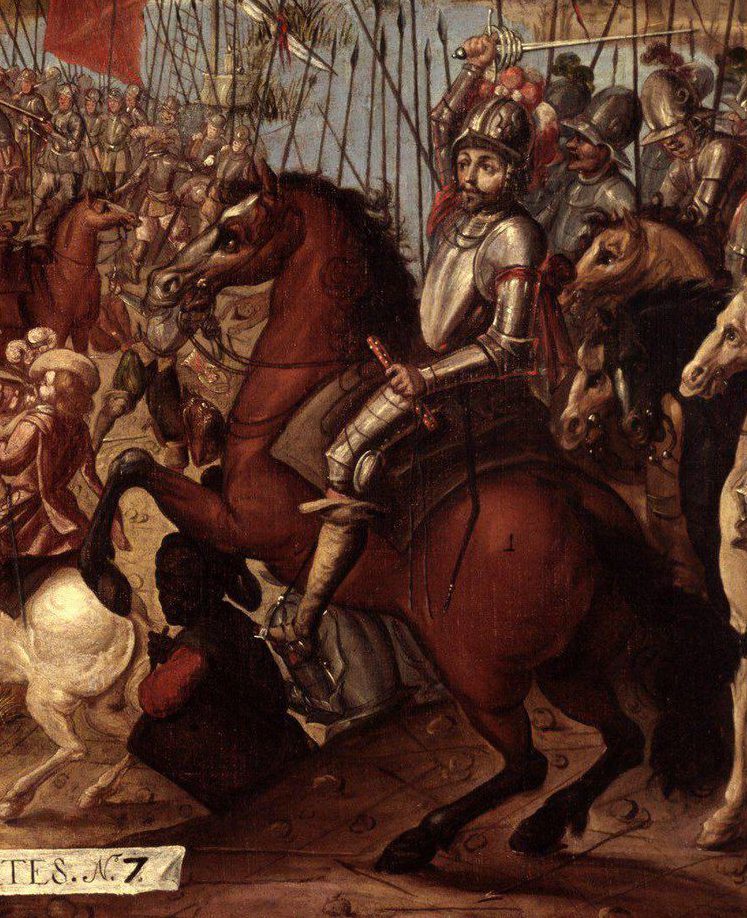

⏱️ 10초 카드 · 아스텍 정복 (1485~1547)
콘키스타도르테노치티틀란 함락말린체와 동맹군
여는 질문 — '유능함'은 '올바름'을 보증할까?
이름
한국어코르테스
원어Hernán Cortés
실제 발음에르난 코르테스
로마자Hernán Cortés
영어권Hernán Cortés
왜 이 사람인가
이 도감에서 코르테스는 '뛰어난 능력이 향한 곳이 파괴였던' 인물이에요. 그의 결단력·정치 감각·동맹술은 비범했지만, 그 모든 재능이 한 문명을 무너뜨리는 데 쓰였죠. '유능함이 곧 올바름은 아니다' — 비스마르크 편에서 본 그 단서가, 여기서 가장 극단적인 모습으로 나타나요.
생애
스페인 하급 귀족 출신으로 카리브 식민지에서 경력을 쌓다, 1519년 약 500명을 이끌고 멕시코에 상륙했어요. 도착하자 배를 가라앉혀 퇴로를 없앤 일화로 유명하죠 — 흔히 '배를 불태웠다'고 알려졌지만 실제로는 좌초시켜 해체한 것으로 기록돼 있어요.
그의 진짜 무기는 칼보다 정치였어요. 아스텍의 지배에 시달리던 틀락스칼라 등의 불만을 읽어 수만의 동맹군을 만들었고, 통역 말린체의 도움으로 협상과 정보전을 펼쳤죠. 천연두가 테노치티틀란을 휩쓴 뒤, 1521년 도시를 함락시켜 한 문명의 수도를 폐허로 만들었어요.
그 폐허 위에 멕시코시티가 세워졌고, 살아남은 사람들에게는 강제 노동(엔코미엔다)이 기다렸어요. 말년에는 왕실의 견제 속에 쓸쓸히 죽었죠. 멕시코에는 그의 동상이 거의 없어요 — 정복자를 기념하지 않겠다는 그 나라의 대답이에요.
자료로 보기 — 유묵·사진



남긴 말
“우리 스페인 사람은 오직 금으로만 나을 수 있는 마음의 병을 앓고 있소.”
황금을 요구하며 아스텍 사신에게 했다고 전해지는 말 — 정복의 동기를 솔직하게 드러내죠. · 출처: 베르날 디아스의 기록(전언)
“이 도시는 세비야나 코르도바만큼 큽니다.”
그가 스페인 왕에게 보낸 편지에서 테노치티틀란을 묘사하며 — 그 거대함에 놀라면서도 결국 파괴했어요. · 출처: 코르테스 『보고 편지』(요지)
연표
- 1485출생 (스페인 메데인)
- 1519멕시코 상륙 — 배를 가라앉히다
- 1520'슬픔의 밤' — 아스텍의 반격으로 퇴각
- 1521.8테노치티틀란 함락 — 아스텍 멸망
- 1547스페인에서 사망
생애의 길 — 베라크루스에서 테노치티틀란까지 🗺️
상륙에서 동맹으로, 슬픔의 밤에서 함락으로. 번호를 차례로 눌러 보세요.
현재 지도 위 경로예요. 해안에서 고원의 호수 도시로 올라간 그 길의 끝에서, 한 문명의 수도가 사라졌어요 — 그 자리가 지금의 멕시코시티예요.
빛과 그림자결단력·정치 감각·동맹술은 비범했지만, 그 모든 능력이 향한 곳은 한 문명의 파괴였어요. '유능함'이 '올바름'을 보증하지 않는다는 것 — 비스마르크 편에서 본 그 단서의 가장 극단적인 사례예요.
더 깊이 (고등·일반)
배를 가라앉히고 — 퇴로를 없앤 상륙
1519년, 코르테스는 약 500명을 이끌고 멕시코에 상륙하자마자 자신들의 배를 못 쓰게 만들었어요. 흔히 '배를 불태웠다'고 알려졌지만, 실제로는 좌초시켜 해체한 것으로 기록돼 있죠. 돌아갈 길을 스스로 없앤 거예요 — '이기지 못하면 죽는다'는 배수진이었어요.
참고: 코르테스의 멕시코 상륙(1519) 일반
칼보다 정치 — 동맹과 말린체
코르테스의 진짜 무기는 칼이 아니라 정치였어요. 그는 아스텍의 가혹한 지배에 시달리던 틀락스칼라 같은 부족들의 불만을 읽어 수만 명의 원주민 동맹군을 만들었죠. 통역이자 조언자였던 원주민 여성 말린체의 도움으로 협상과 정보전을 폈고요. 아스텍을 무너뜨린 건 스페인군만이 아니라, 아스텍에 눌려 있던 이웃들이기도 했어요.
참고: 틀락스칼라 동맹·말린체 일반
슬픔의 밤, 그리고 보이지 않는 정복자
1520년, 아스텍의 반격으로 코르테스 일행은 큰 피해를 입고 수도에서 쫓겨났어요('슬픔의 밤'). 그러나 진짜 승패를 가른 건 따로 있었죠 — 유럽인이 옮긴 천연두였어요. 면역이 없던 테노치티틀란 사람들이 병으로 쓰러지면서, 도시는 싸우기도 전에 무너지고 있었어요.
참고: '슬픔의 밤'·천연두 일반
테노치티틀란 함락 (1521)
천연두로 약해진 도시를 코르테스는 동맹군과 함께 포위했고, 1521년 8월 끝내 함락시켰어요. 인구 20만의 화려한 호수 도시는 폐허가 됐죠. 한 문명의 수도가, 그 수도를 처음 본 지 2년 만에 사라진 거예요.
참고: 테노치티틀란 함락(1521) 일반
동상 없는 정복자 — 멕시코의 대답
폐허가 된 테노치티틀란 위에 멕시코시티가 세워졌고, 살아남은 사람들에겐 강제 노동(엔코미엔다)이 기다렸어요. 코르테스 자신은 말년에 왕실의 견제 속에 쓸쓸히 죽었죠. 흥미롭게도 멕시코에는 그의 동상이 거의 없어요 — '정복자를 기념하지 않겠다'는 그 나라의 분명한 대답이에요.
참고: 엔코미엔다·코르테스 기념 논쟁 일반
사람의 그물 — 함께 읽을 인물
이 인물이 나오는 이야기
더 공부하기 — 여기서 출발하세요
📚 책으로
- 아스텍 제국의 정복 ↗ · 휴 토머스코르테스와 아스텍, 양쪽을 함께 보는 표준 역사서.
- 아스텍 정복의 일곱 가지 신화 ↗ · 매슈 레스톨'소수가 대제국을 이겼다'는 신화를 사료로 해체.
📜 1차 사료
- 코르테스 『보고 편지』 (Cartas de Relación) ↗정복자 본인이 왕에게 보낸 기록 — 그의 시선이 그대로.
🎬 영상으로
- Kings and Generals 〈테노치티틀란의 함락〉 ↗🟢 코르테스의 상륙부터 '슬픔의 밤', 함락까지를 지도와 함께 따라가는 애니메이션 다큐(영어/자막).
📍 가 볼 곳
- 템플로 마요르 (멕시코시티) ↗테노치티틀란 대신전의 발굴 유적 — 폐허 아래 묻혔던 문명.
- 베라크루스 (멕시코)코르테스가 상륙해 배를 가라앉힌 해안.